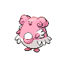

📖 英語版の図鑑説明
A kindhearted Pokémon that will care for any sick person or Pokémon until their health improves. The eggs it lays are delicious and bring good fortune to those who eat them.
日本語訳
病気の人やポケモンが元気になるまで世話をする、心優しいポケモンです。産む卵は美味しく、食べた人に幸運をもたらします。
📝 この図鑑文に出てくる英単語
| 英単語 | 意味 | 品詞 | レベル |
|---|---|---|---|
| kindhearted | 心やさしい | 形容詞 | 大学 |
| care | 世話、気にかける | 名詞 | 中2 |
| sick | 病気の | 形容詞 | 中1 |
| until | 〜まで | 前置詞 | 中2 |
| health | 健康 | 名詞 | 中3 |
| improves | よくなる | 動詞 | 高校 |
| lays | 置く、(卵を)産む | 動詞 | 高校 |
| fortune | 運、財産 | 名詞 | 高校 |
文法ポイント until 〜 は「〜するまで(ずっと)」という意味。その時点まで状態や動作が続くことを表します。
who は関係代名詞で、直前の名詞をくわしく説明するまとまりを作っています。人や生き物について説明するときに使います。
💡 英語名「Blissey」の由来
英語名「Blissey」は、bliss（至福）がもとになっていると考えられている。フランス語の名前は「Leuphorie」で、l'oeuf（卵）、euphorie（幸福感）から作られている。
出典 Bulbapedia
📊 ハピナスの種族値
HP255
こうげき10
ぼうぎょ10
とくこう75
とくぼう135
すばやさ55
合計 540
❓ よくある質問
- ハピナスの英語名は？
- ハピナスの英語名は「Blissey」です。
- ハピナスの英語名「Blissey」の由来は？
- 英語名「Blissey」は、bliss（至福）がもとになっていると考えられている。フランス語の名前は「Leuphorie」で、l'oeuf（卵）、euphorie（幸福感）から作られている。
- ハピナスは英語版の図鑑でどう説明されている？
- 「A kindhearted Pokémon that will care for any sick person or Pokémon until their health improves. The eggs it lays are delicious and bring good fortune to those who eat them.」と書かれています。日本語にすると「病気の人やポケモンが元気になるまで世話をする、心優しいポケモンです。産む卵は美味しく、食べた人に幸運をもたらします。」という意味です。
ハピナスは第2世代（ジョウト地方）のポケモンです。第2世代（ジョウト地方）の英語名一覧 →